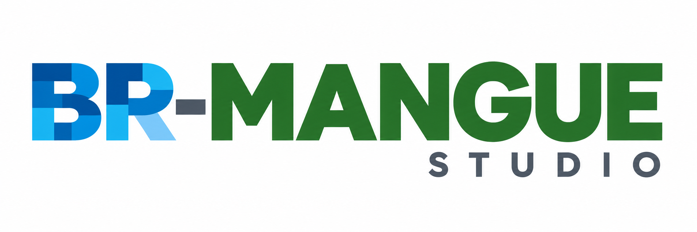

Input data
Use your own categorical land-cover and elevation GeoTIFFs. An area mask and a class-name legend are optional.
Open-source research software
Explore how mangrove landscapes may respond to sea-level rise.
A desktop application that uses spatial cellular automata with land-cover and elevation data supplied by the researcher.
Version 1.4.10 · Windows 10/11 · Linux x86_64 · English and Brazilian Portuguese

Load aligned land-cover and elevation rasters, assign their classes to model states, configure a scenario, and inspect the results.
Use your own categorical land-cover and elevation GeoTIFFs. An area mask and a class-name legend are optional.
Set the time period, sea-level forcing, tidal influence, accretion, and migration options.
Review annual state maps, class transitions, trajectories, and run metadata.